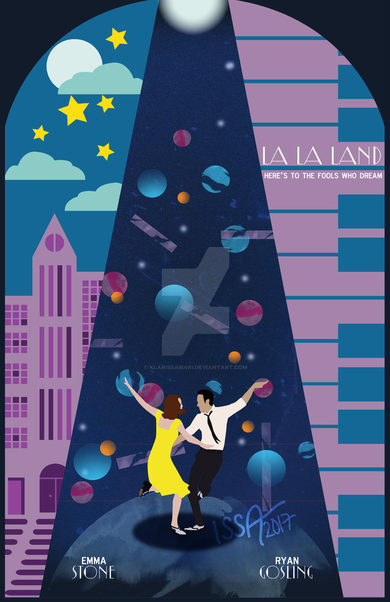
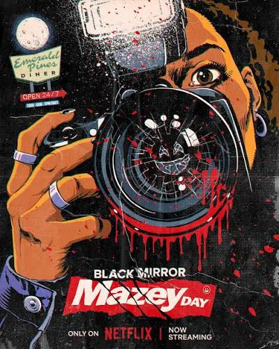

La La Land
Romantik • Müzikal
Sevdiğin film ve dizileri seç, yorumunu yaz ve sana uygun yeni yapımları keşfet.

Romantik • Müzikal

Bilim Kurgu • Dram
Komedi • Dram

Komedi • Dizi

Bilim Kurgu • Dizi
Yorumunu yaz